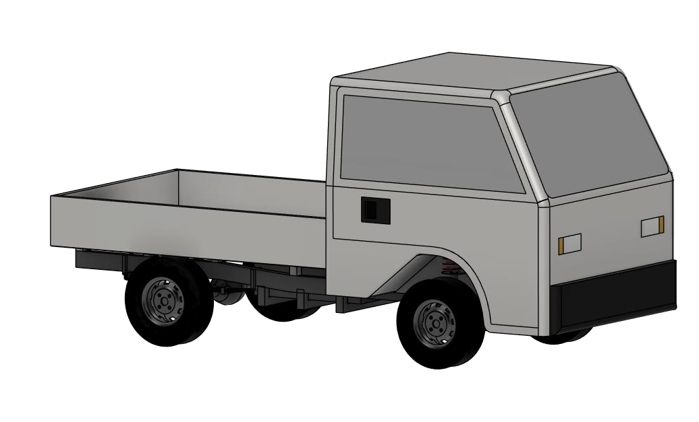

Created the team’s vehicle CAD model and wrote the product design specification for the electric farming truck, including its body and chassis.

Specifications
- Must be capable of being driven legally on the UK road system and must be able to hold at least two passengers
- Designing a fully electric vehicle that has the range to complete daily farming tasks while in rough and dirty terrain.
- Design the truck to be able to manage loads that would be required for tasks around the farm, as well as the ability to maneuver in muddy terrain
Contribution
- Engineered the overall CAD model for the team to create a base to design around
- Created the product design specification for the overall attributes of the vehicles, as well as for the body and chassis.